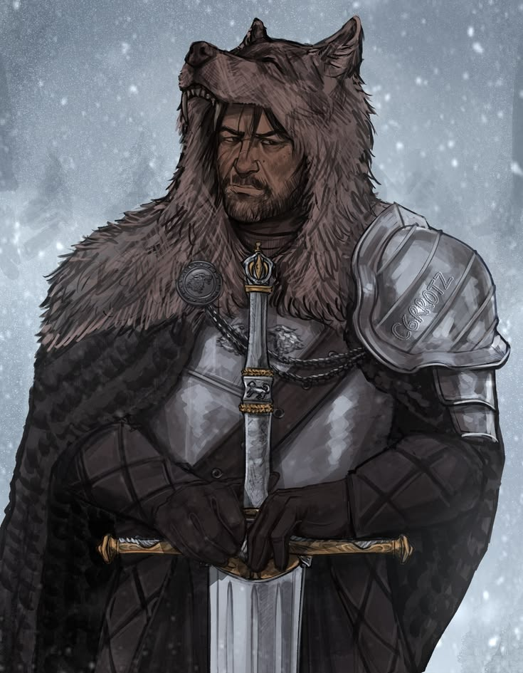

| Ulf Stark | the Warlord of House Stark Kharven, House Stark of Hollenmark as of the gatehouse at Kharven’s Foot, the morning he swore the house to the Tokenless and rode south |
| Epithet | the Worst of the Seven short for the worst of the Seven Warlords to have against you, which the north says as a boast and the Seat’s tax-men say as a complaint; north of the salt basins people know his name the way they know the name of a bad winter |
| Concept | He gives away everything he’s got, and he always knows who can carry it. |
| Stat line | Stage VI Glory · Expert (Faceted) Level 185 · Refined · Marchwarden Body VI Mastered, I · Fate V Walked 35%, not yet read · Spirit Studied 5%, not yet read · Lenses: home |
| Combat grammar | Blade, heavy; the great sword two-handed, point down when he is thinking |
| Aura and sound | the Stark cold at Glory’s clarity: dark gray under a hard white rime that frosts the fur of his hood and silvers the snow for yards round him sound: a frozen lake taking weight, deeper than his son’s |
| How he moves | He does not come to you. He stands the way a boundary stone stands, feet wide, the weight straight down through the heels at the Stark walk, Marchstone point down in front of him and both hands on the cross, and he looks at you for as long as he likes. |
| Stack | sustainable means of 112.5 and 103.6 in Vitality and Dominion, 87.5, 87.5 and 81.25 in Ardency, Resilience and Dexterity cap two steps on the hidden scale over the sustainable figure (to 400 on the first two, 275 on the rest) layers: none; WE GIVE steadies the hand and adds no step; no release called, no Draft, no vow that buys him anything |
| Releases | none; the First Release has stood open to him since Stage IV |
| Bonded weapon | none; Marchstone goes with the title |
| Kit | the head and pelt of a great brown wolf, bright plate and one heavy pauldron on black quilting, a black iron ring in his beard-braid, and the piece people talk about first: Marchstone, a Legendary great sword he stands behind point down |
| Voice | ”That’s just the way this life is, lad. We give. And we give. And then we give some more.” speaker type: a northern warlord who has buried a great many men, and calls everyone under forty lad |
| Field | Value |
|---|---|
| Full Name | Ulf Stark |
| Pronunciation | OOLF STARK |
| Titles | Lord of Hollenmark Master of the eastern March Warlord of House Stark, of Hollenmark and the eastern March and the borders, by the right of his father and his father’s father and of his brother Torvald, who held it before him |
| Age | Fifty-seven |
| Family | Torvald Stark, his younger brother, who led first, named Ulf to it, and died laughing on the Kurenai’s script Yusif Stark, his father’s younger brother, born the winter Ulf got his first sword his sons Lorn, Rob and Mark |
| Refusal | He will not let the boy hear who he is from him; Wystan was right that the boy must find it himself, and Ulf hated it |
| Conviction | The north does not rise for an old man’s grudge; it rises for a story, and it has been a long time since anybody gave it one worth getting up for |
| Field | Value |
|---|---|
| Class | Marchwarden, the soul’s name for a man who has spent his life standing on the edge of something and deciding what crosses it; a border captain’s class, common along the passes, and plain for a Warlord, which he finds very funny · gives: the skill Command of the March, forty years old already when the name came · shapes: his points fall to the body that stands there and the voice that holds the line, and few to the pull · evolved from: nothing yet; it is the first name his soul has offered, at Glory, and it evolves as his Body Mastery rises |
| Mastery | Body I, Muridic: the lead, at Glory’s ceiling; his Traits work at it · Fate, Walked, and Spirit, Studied: behind a lead of I, and not yet read |
| Level | 185; it holds Glory (115) and would hold Refraction (130), and no Residual Strain builds in him short of 200 |
| Primary | Total |
|---|---|
| Vitality | 900 |
| Ardency | 700 |
| Gnosis | 450 |
| Dexterity | 650 |
| Harmonics | 250 |
| Resilience | 700 |
| Tempering | 200 |
| Dominion | 725 |
| Pool | 4,575, all spent |
| Peaks | Fortitude and Constitution; Penetration; Command and Pressure; Forecast, which reads a boy across a room and a road across a winter |
| Measure | Figure |
|---|---|
| EU Reserve | 617,192 EU |
| Flux Density | 40,000 EU/g |
| AU/s | 24,800 · empties in 24.89 seconds at full output |
Traits
Full accounts: Ulf Stark — Abilities
Every Trait reads at his lead Mastery, Body I.
| Trait | Kind | Source | Path and Form | Gates | What it does | Limit | Tell | Cost | Counter | Numbers |
|---|---|---|---|---|---|---|---|---|---|---|
| THE MAKING OF A GENERAL | Primary | — | — | — | One long look at a man tells him what that man can carry and how far, and then he says, “Ah. So there he is.” (Primary Trait) | It reads what a man can carry, not what he will choose. Those two summers are the proof: he read what Gimbzo could carry, and he was right, and it told him nothing about what the man would do with it. | The long look, the pale eyes going over a man the way they go over a ford, the black iron ring turning in the beard-braid under his thumb, and then the line. | Nothing, because nothing is made or thrown: it is a read, and it runs on his eyes and his years. | A man who shows him nothing: stand still, keep your hands quiet, carry nothing in front of him, and never take the road he offers. | No reserve. |
| WE GIVE | Secondary | — | — | — | While he is giving something away, his brother, his riders, his house, his neck, fear cannot reach him and his hands do not shake. (Secondary Trait) | It is all one way; nobody promises the Starks anything back, not the Sky, not the lines, not the people they give it for. It also works only on what is his. He cannot give away another man’s life and feel nothing, and the boys younger than sixteen he lets lie their way into the vanguard are a weight the Trait does not lift. | A sentence and never a gesture: by the time he says “That’s just the way this life is, lad,” the giving is done and his hands are already quiet. | Everything, and he does not count it. | Something he would not give, and nobody has found it. The nearest anyone came was Wystan Greymane, who talked him into keeping one thing back, the boy’s own name, and Ulf sat on it like a man selling a horse with a cracked hoof under a blanket. | No reserve. |
| STARK RIME | Inherited | — | — | — | The Stark cold at full strength: the warmth walks out of everything near him and down through his heels, the snow goes hard as a floor, and his great sword runs white to the point. (Inherited Trait) | It moves heat and cannot make it. On ground already frozen to the bottom there is little left for it to take, against a real fire it is a bucket against a furnace, and pushed past what his body can pass along, the cold stops in him on the way down: white fingers first, then a slow, stupid hand on the cross, which a man two fingers short cannot afford. | His breath stops steaming and the wolf-fur goes white. | — | Heat, and calm: a brazier at your back, a warm blade, and nothing said about his brother. | No reserve at rest; reach, yards round him. · Sound: a frozen lake groaning under weight |
Skills and Abilities
Full accounts: Ulf Stark — Abilities
Skills
| Skill | Cues / mechanics | Learned where | Priced by (Sub-Stats) | Rank |
|---|---|---|---|---|
| Command of the March | he does not raise his voice and it carries to the last man in the line; he tells them the truth about who is leading them and why | forty winters on the passes, and Torvald | Command, Pressure | Journeyman |
| The Stark Great Sword | point down until it is needed; one rising cut, one falling cut from the right shoulder, the left hand steering at the pommel | the Hollenmark yard, the year he got his first sword | Penetration, Fortitude | Apprentice |
| The Bearded Axe | hook the shield rim or the knee with the beard, pull, and chop into what opens; forty years of it before the axe went to Lorn | the passes | Penetration, Reflex | Apprentice |
| Winter Campaigning | caches laid in autumn, riders turned through warm halls, the enemy’s cook-fires before his walls; which ice holds and which road is a trap | his father, and Old Harald Keld’s example | Forecast, Command | Apprentice |
| Reading a Man | the long look; better still, a hard road and a count of the wagons that come out | picking roads | Forecast, Analysis | Apprentice |
Techniques
| Technique | Kind | Mark | Source | Path and Form | Gates | What it does | Limit | Tell | Cost | Counter | Numbers |
|---|---|---|---|---|---|---|---|---|---|---|---|
| AND THEN WE GIVE SOME MORE | Signature art | — | — | Path Body, Mastered, for the cold, the sword and the road; the Walked Fate for the look and the giving, with a little Studied Spirit in the look · Lens the Stark cold, the house’s inheritance (no Wellspring) for the rime; the look and the giving are his own soul’s habits, and the Winter Road is a taught craft of war · Forms Shape and Strike (the rime), Read (the look, Path Fate, landing through the Studied Spirit (Form Read): a small use; opens no gate), Bind (the giving) | none | He gives away everything he’s got, and he always knows who can carry it | — | — | It only goes one way: nothing is promised back, and the last thing on the list is his neck. | — | — |
| THE WINTER ROAD | House Art, Signature | Mastered | Taught | — | — | His riders move through the snow while yours sit by the fire, and they come out of the white from the side nobody was watching. (House Art, Stark · Signature) | The thaw. In mud the caches flood, the crust rots, the tracks show black for anyone to follow, and a light column with no wagons is just a small army a long way from home. | There isn’t one: he has already moved before you knew he was coming. | The riders, not the lord: frostbite, lost horses, boys who sat down in the snow to rest. | A fire, a thaw, and a scout who does not sleep: a garrison that stays warm, fed and behind its wall cannot be starved out by the weather, and one waking man on the right ridge undoes a month of marching. | No reserve of his; it is paid in riders; the passes held forty years. |
Physical Description
| Feature | Description |
|---|---|
| Build | He is big, the kind of big Rob is going to be in twenty years, broad as a doorway, the arms gone heavier with age and the body under the plate heavier still. |
| Hair | His hair is dark and worn to the shoulders, and his beard is dark and full and close-cut, with gray coming into both. |
| Face and eyes | His face is broad and weathered, with a heavy brow and pale northern eyes, very much awake. |
| Marks and scars | Under the hair the scalp is scarred white in three places, and the small and ring fingers of his left hand were cut away clean at the knuckle a long time ago, which he hides inside a black glove. |
| Outfit | He wears the head and pelt of a great brown wolf as a hood and mantle, the jaws over his brow and the fur falling to his elbows, pinned with a round silver Stark badge on a chain; under it, a bright breastplate stamped with the wolf of Hollenmark and a heavy fluted pauldron over the right shoulder, on a black gambeson quilted in diamonds; a black cloak. |
| How the sword is worn | He stands with a long-hilted great sword point down in front of him and both hands on the cross, the way a mountain sits on a plain. His bearded war-axe rides on his son’s back now, and his mail, too big for both of the boys who have worn it, and his gray wolfhound lies across the Tokenless’s boots. |
Voice
| Field | Value |
|---|---|
| Speaker type | a northern warlord |
| Notices first | what a man can carry |
| Sentence length | plain and short, then a long one when he means it |
| Contractions | always |
| Pet word | ”lad” |
| Oaths | ”Sky above,” and “before witnesses, before the Sky” |
| Laugh | a cackle, high and cracked, for fools; a quieter one, warmer and a little sad, for the boy |
| Habit | steepling his fingers, the whole hand and the maimed one |
| Sample line | ”That’s just the way this life is, lad. We give. And we give. And then we give some more.” |
Equipment
| Item | What it is | Grade | Rarity | Rung | Bonded |
|---|---|---|---|---|---|
| Marchstone | long-hilted northern great sword, the Warlord’s sword of House Stark | A | Legendary | Fieldwinner | no; it goes with the title |
| The wolf hood | head and pelt of a great brown wolf, worn as hood and mantle | plain | Uncommon | — | — |
| The silver badge | round Stark badge in silver, on a dark chain across the breast | plain | Rare | — | — |
| The war plate | bright breastplate stamped with the wolf of Hollenmark, one heavy fluted pauldron, black gambeson quilted in diamonds, black cloak | C | Rare | Wallbiter | no |
| The war-axe and the mail | bearded war-axe on an ash haft, riveted northern war-mail, an older mail shirt | plain | Uncommon | — | — |
| The beard ring | a ring of black iron braided in at the chin | plain | Common | — | — |
| The left glove | black glove for the maimed hand | plain | Common | — | — |
| The traveling chair | great high-backed chair of dark oak and iron, draped in old wolf-pelt | plain | Uncommon | — | — |
| Item | Stamp | Maker’s mark | Mass and balance | Against armor | Look | How shown off | Past owners | What people say | Price |
|---|---|---|---|---|---|---|---|---|---|
| Marchstone | Hallowed | the Hollenmark yard’s small boundary stone, worn nearly flat | about four kilograms, balanced low toward the hilt | breaks Instrument harness and passes anything under it, fails against Hallowed harness and up | lake-gray steel with a broad double fuller that runs white under his rime; a long cross of gilt bronze inlaid with silver, worn down to the bronze where his hands sit; the grip a steel sleeve with a small walking wolf on a plate between two bands of gold rope, and a pommel like a little crown of gold and steel, the only crown he owns | point down in front of him and both hands on the cross, the way a boundary stone stands, and he has ended arguments with that alone | his grandfather, his father, then Torvald, whose head came home with a note and whose sword came home beside it, cleaned, which Ulf has never forgiven; then him | a Stark border is wherever he has set the point; the Hollenmark smith’s last try at a sword to match it came out too plain, and Rob has that one | no price, and nobody in the north would be seen bidding |
| The wolf hood | — | — | — | — | dark brown going to rust at the ruff, the upper jaw and its yellow teeth over his brow and the fur falling to his elbows, rubbed thin on the crown; his rime turns all of it white | he does not take it off indoors | — | he killed it with his hands at fifteen; he says he paid a trapper four silver for it, and cackles, and nobody has ever believed him | — |
| The silver badge | — | — | — | — | a wolf’s mask struck deep in heavy silver, thumbed smooth on the muzzle, and the chain slung from the hood to the pauldron; his letters go out under the same wolf in gray wax his sons’ badges are brass | — | — | Vessant factors who have seen it across a table say they stopped arguing without noticing when | — |
| The war plate | Tempered | the boundary stone inside the breast | — | — | the steel kept bright and the wolf struck shallow at the center, the pauldron fluted in ridges like a ram’s horn over a stack of three lames, and every flute of it has been hit; the wool black, the diamonds sewn in waxed thread and patched at the elbow | he doesn’t own the rest of it any more | — | his better harness is on his riders, a piece here and a piece there, and at the Foot you could count three men in Ulf’s greaves | — |
| The war-axe and the mail | — | — | — | — | no working; the axe took his hand and no one else’s, forty years of it the axe and the war-mail ride on Lorn now; the older shirt, too long in the arm and too short in the body, he handed to the Tokenless, and the Stark armorer took it in at the sides | he gave them away, the one flex his house respects | — | — | — |
| The beard ring | — | — | — | — | a link off his first mail shirt, filed smooth on the one side his thumb knows | he turns it, and men who deal with him for a living watch it, because that is when he is choosing what to leave out | — | Hollis Draycott’s long letters mention it | — |
| The left glove | — | — | — | — | the two empty fingers stuffed with wool and stitched, so that from across a yard the hand is whole; by his own fire he takes it off and lets you look | — | — | — | — |
| The traveling chair | — | — | — | — | it wants a cart and two men, and he had it hauled from Hollenmark to a factor’s back room in Halcrest for one meeting | that is the whole of how | — | it has seen more of the north than most of his captains, and men who have stood in front of it can tell you what they said | — |
Lore
Full account: Ulf Stark — Lore
Ties
| Person | Who they are to him |
|---|---|
| Muken Moto | the Tokenless, to whom he left the house |
| Lorn, Rob and Mark Stark | his sons |
| Torvald Stark | his brother |
| Yusif Stark | his uncle |
| Wystan Greymane | who rode south beside him |
| Hollis Draycott | his man in Halcrest |
| Kiyome Byakuya | who knew him since she was a girl |
| Sumie Kurenai | who carried the blade |
| Old Harald Keld | who was better at winter than he was |